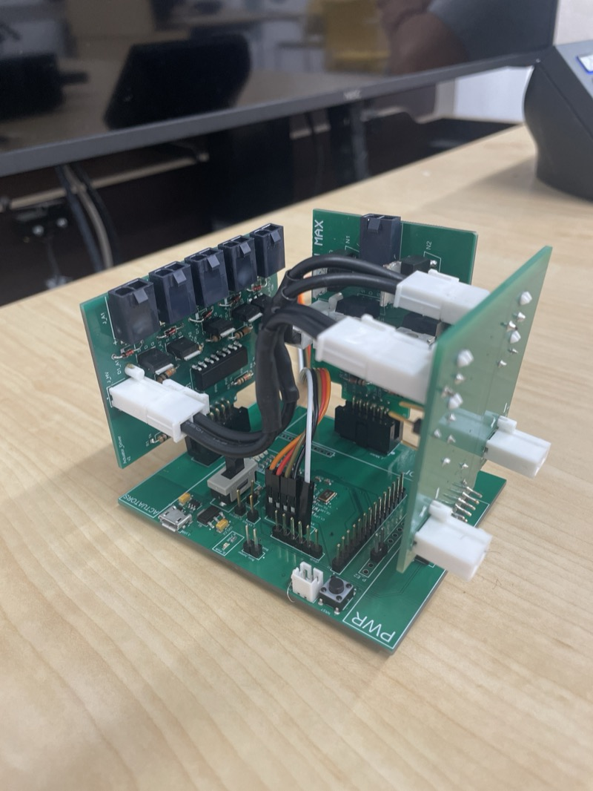
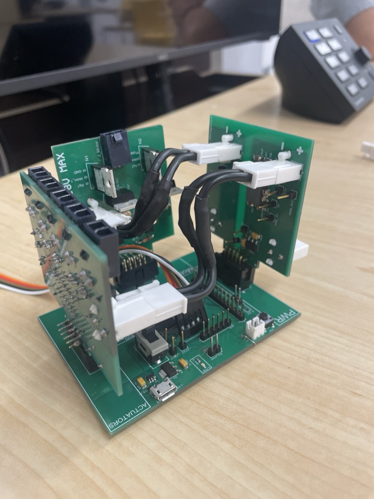
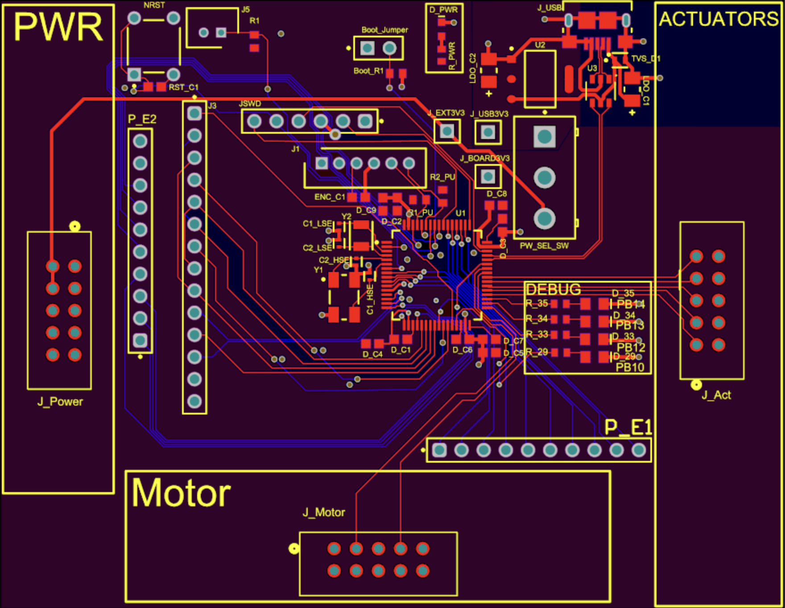
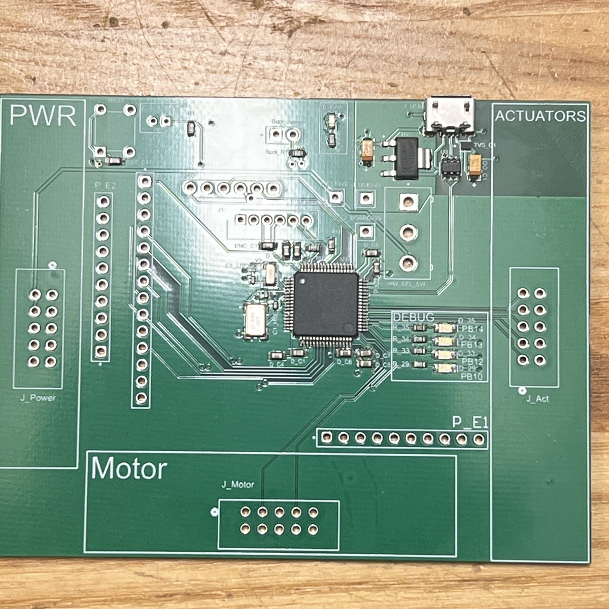
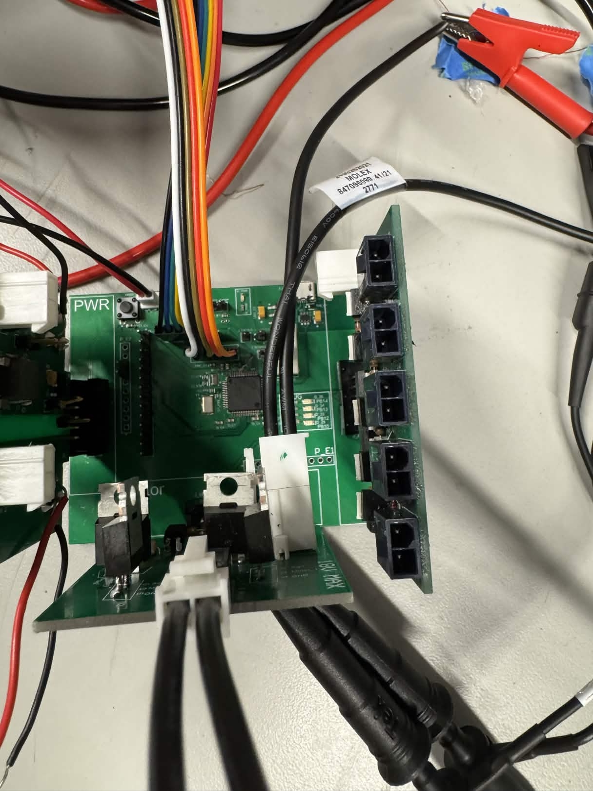
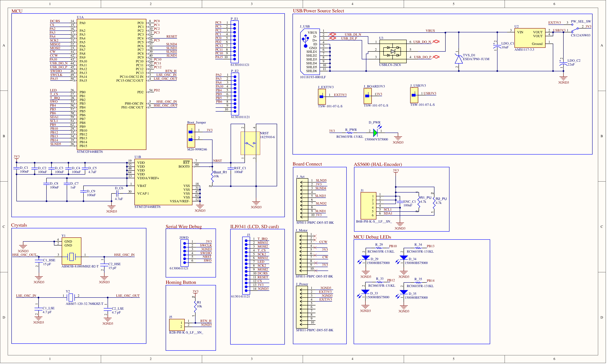

Piano Robot Motherboard
STM32F446-based motherboard for a piano-playing robot, designed as part of a university design course. The full system was fabricated, assembled, tested, and successfully played a complete song.
Overview
The motherboard serves as the central controller for a piano-playing robot, interfacing with three daughter boards via board-to-board connectors: a solenoid actuator board for key-pressing, a motor driver board for lateral positioning along the keyboard, and a power board for regulated supply. All boards were designed in Altium Designer, assembled via hot plate reflow soldering, and integrated into a 3D-printed enclosure.
System Architecture
- Motherboard — STM32F446RET6 (ARM Cortex-M4, 180 MHz) with SPI (ILI9341 LCD, SD card), I2C (AS5600 magnetic encoder), USB (CDC virtual COM port and DFU firmware flashing), SWD debug header, and two GPIO expansion headers for probing
- Motor Driver Board — Optocoupler-isolated H-bridge using power MOSFETs (PMOS/NMOS), PWM-controlled via TIM1 channels; 12–16V rail, 8.5A stall current; final demo at 20 kHz PWM after a post-fabrication shoot-through rework (full writeup →)
- Solenoid Actuator Board — 4-channel solenoid driver with flyback diode protection for the key-pressing mechanisms
- Power Board — Regulated power supply with dual source selection: external 3.3V or USB 5V via AMS1117-3.3 LDO, with an SPDT break-before-make switch to prevent simultaneous connection
Design Highlights
- USB with full ESD protection — USBLC6-2SC6 on D+/D- data lines and ESDA7P60 TVS on VBUS, with 90-ohm differential pair routing per ST AN4879 guidelines
- Decoupling per ST AN4488 — Individual 100nF caps on each VDD pin, 4.7μF bulk on VDD, 100nF + 1μF on VDDA/VREF+, and 4.7μF on VCAP1 for the internal 1.2V regulator
- DFU boot configuration — BOOT0 pin with 10k pull-down to GND and a 2-pin jumper header to 3V3; jumper on + reset enters the ST built-in bootloader for USB firmware flashing without an external programmer
- Modular interconnects — Three 10-pin board-to-board connectors (SFH11-PBPC-D05-ST-BK) placed on three edges for vertical daughter board stacking
Board Stack
Complete board stack with all three daughter boards connected via board-to-board connectors. The power board sits at the base, with the motor driver and solenoid actuator boards mounted vertically.


PCB Layout
2-layer board designed in Altium Designer. Board-to-board connectors placed on three edges for vertical daughter board stacking. USB differential pair routed with ESD protection close to the connector. HSE/LSE crystals placed near MCU oscillator pins with short, symmetric traces.

Assembly & Testing
All SMD components (LQFP64, 0603, 0402 passives) soldered via hot plate reflow. The motherboard was verified independently before integration with the daughter boards.


Final System
The complete system — motherboard and all three daughter boards — integrated into a 3D-printed enclosure with an ILI9341 LCD display. The robot successfully played a complete song in the final demonstration.

Demo Videos
Tuning test — verifying motor positioning and solenoid actuation.
Full performance — Fly Me to the Moon at the final demonstration.
Schematic
Full schematic designed in Altium Designer. See the GitHub repository for the complete PDF.
